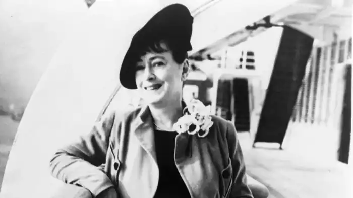
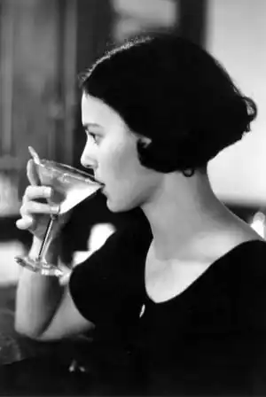
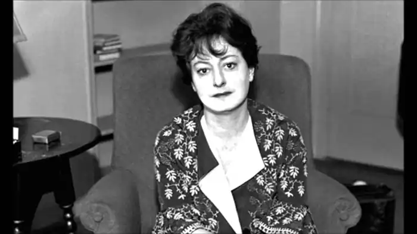

Дороті Паркер (22 серпня 1893 — 7 червня 1967) — була американським письменником і поетом, більш відома своїм їдким гумором, дотепами і проникливістю про міські слабкості XX століття.
З конфліктного і нещасливого дитинства Паркер виросла до визнання, як її літературних праць, в таких виданнях, як Нью-Йоркер, так і змогла стати членом-засновником прославленої групи письменників Algonquin Round Table, яку вона пізніше стала зневажати. Після розпаду цієї групи Паркер поїхала до Голлівуду, де займалася написанням сценаріїв. Її успіхи там, в тому числі дві номінації на премію "Оскар", в кінцевому підсумку були обмежені, тому що її участь в ліво-політичному русі привело до того, що вона потрапила в горезвісний "Чорний список" Голлівуду.
Паркер пережила три шлюби (два з одним і тим же чоловіком) і ряд спроб самогубства, проте стала більш залежною від алкоголю. Хоча вона і розтратила свій талант і шкодувала про свою репутацію в якості "вістряка", її літературна продукція та її блискучі гостроти витримали випробування часом надовго після її смерті. У 1994 році на екрани вийшла картина "Місіс Паркер і порочне коло" режисера Алана Рудольфа. Головну роль блискуче виконала Дженіфер Джейсон Лі. Драма про зліт і падіння відомої американської письменниці XX століття розвінчала численні чутки і домисли, показавши справжню історію життя Дороті Паркер — "жінки, якою знехтували".